| 多変量分散分析（SASによる実験データの解析：第14章） |
| 多変量分散分析（SASによる実験データの解析：第14章） |
分散共分散構造にH-F条件のような仮定を必要としない
多重性を考慮した同時信頼区間を算出できる
標本数は時点数に比べある程度大きくないと検定力が低くなる
欠測を含む個体は除去する必要がある
H-F条件が成り立っている場合は、通常のANOVAの方が検定力が高い
図3.4は、降圧剤の投与量（10mg, 20mg）と血圧の経時変化（投与前、1時間後、3時間後）に関するデータ databloodpressure.csv を示したものである。
図3.5は、このデータを箱ひげ図として表したものである。 投与後時間が経過するごとに血圧が下がっていくこと、また20mg投与群の方が10mg投与群より全体的に血圧の低いことがわかる。 低下の程度は20mg投与群の方が大きいようにも見えるが、判然とはしない。
今、HotellingのとMANOVAによって、10mg群と20mg群で血圧の母平均ベクトルが等しいという帰無仮説を検定する。 すると、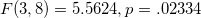となってこの帰無仮説は棄却される1。
ただし、母平均ベクトルが2群で等しくないという結果だけでは、「血圧の高さそのものが異なる」のか「血圧の下がり方が異なる」のかわからない。
Rのスクリプトと実行結果は以下の通り。
> HotellingsT2Test(cbind(投与前, 一時間後, 三時間後)~降圧剤, data=data01)
Hotelling's two sample T2-test
data: cbind(投与前, 一時間後, 三時間後) by 降圧剤
T.2 = 5.5624, df1 = 3, df2 = 8, p-value = 0.02334
alternative hypothesis: true location difference is not equal to c(0,0,0)
> fit01 <- manova(cbind(投与前, 一時間後, 三時間後)~降圧剤, data=data01)
> summary(fit01, test="Wilks")
Df Wilks approx F num Df den Df Pr(>F)
降圧剤 1 0.32405 5.5624 3 8 0.02334 *
Residuals 10
---
Signif. codes: 0 ‘***’ 0.001 ‘**’ 0.01 ‘*’ 0.05 ‘.’ 0.1 ‘ ’ 1
同じデータについて、repeated ANOVAによる分析も行ってみることにしよう2。 Rのデフォルトの関数 aov() を用いることにすると3、従属変数が1列になるようデータの変形を行って、
> data02 <- data.frame(被験者=factor(rep(data01[,1],3)),
+ 降圧剤=rep(data01[,2],3),
+ 時間=c(rep("0h",12),rep("1h",12),rep("3h",12)),
+ 血圧=rbind(as.matrix(data01[,3]),
+ as.matrix(data01[,4]),
+ as.matrix(data01[,5])))
> head(data02,5)
被験者 降圧剤 時間 血圧
1 1 10mg 0h 119
2 2 10mg 0h 110
3 3 10mg 0h 123
4 4 10mg 0h 130
5 5 10mg 0h 121
>
> fit02 <- aov(血圧~降圧剤*時間+Error(被験者/時間), data=data02)
> summary(fit02)
Error: 被験者
Df Sum Sq Mean Sq F value Pr(>F)
降圧剤 1 182.2 182.2 1.806 0.209
Residuals 10 1009.4 100.9
Error: 被験者:時間
Df Sum Sq Mean Sq F value Pr(>F)
時間 2 742.1 371.0 10.343 0.000824 ***
降圧剤:時間 2 115.2 57.6 1.605 0.225663
Residuals 20 717.4 35.9
---
Signif. codes: 0 ‘***’ 0.001 ‘**’ 0.01 ‘*’ 0.05 ‘.’ 0.1 ‘ ’ 1
となる。 時間の主効果は有意であるものの、降圧剤の主効果、降圧剤と時間の交互作用は有意でない。 ただし、関数 aov() を用いるやり方では以下のような限界がある。 タイプIの平方和しか選べない（バランスデザインであることが大前提） 多重比較を TukeyHSD() で行うことができない 球面性の仮定の検証、自由度の調整ができない 単純主効果の検証（多重比較も含めて）ができない パッケージ car の関数 Anova() を用いることで、平方和の種類と球面性の仮定については解決できる4。 同じ分析を、タイプIIIの平方和を指定して行った場合の結果は以下の通り。 この例では、Mauchlyの検定により球面性の仮定は棄却されない。 よって結果は変わらず、時間の主効果のみが有意ということになる。 ただし、これでもTukeyHSD()で多重比較を行うことはできない。
> library(car)
> fit03 <- Anova(lm(as.matrix(data01[,3:5])~降圧剤, data=data01),
+ idata=data.frame(時間=factor(c(0,1,3))),
+ idesign=~時間, type="III")
> summary(fit03, multivariate=F)
Univariate Type III Repeated-Measures ANOVA Assuming Sphericity
SS num Df Error SS den Df F Pr(>F)
(Intercept) 253235 1 1009.39 10 2508.7924 2.431e-13 ***
降圧剤 182 1 1009.39 10 1.8055 0.20874
時間 342 2 717.44 20 4.7685 0.02026 *
降圧剤:時間 115 2 717.44 20 1.6052 0.22566
---
Signif. codes: 0 ‘***’ 0.001 ‘**’ 0.01 ‘*’ 0.05 ‘.’ 0.1 ‘ ’ 1
Mauchly Tests for Sphericity
Test statistic p-value
時間 0.56172 0.074618
降圧剤:時間 0.56172 0.074618
Greenhouse-Geisser and Huynh-Feldt Corrections
for Departure from Sphericity
GG eps Pr(>F[GG])
時間 0.69528 0.03672 *
降圧剤:時間 0.69528 0.23315
---
Signif. codes: 0 ‘***’ 0.001 ‘**’ 0.01 ‘*’ 0.05 ‘.’ 0.1 ‘ ’ 1
HF eps Pr(>F[HF])
時間 0.7721787 0.03157477
降圧剤:時間 0.7721787 0.23172547
時間の主効果が有意であったので、時間に伴う血圧変化が線形であるか対比を用いて検定する。
| 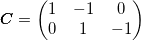 | (3.20) |
として、
| 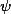 | 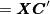 | (3.21) |
対比を作る。
> contrast <- matrix(c(1,-1,0, + 0,1,-1), 2, 3, byrow=T) > psi <- cbind(data01$投与前, data01$一時間後, data01$三時間後) %*% t(contrast) > data03 <- cbind(data01[,1:2],data.frame(psi1=psi[,1],psi2=psi[,2])) > head(data03, 5) 被験者 降圧剤 psi1 psi2 1 1 10mg 6 -1 2 2 10mg -5 3 3 3 10mg -3 15 4 4 10mg 3 27 5 5 10mg 6 -9
これをANOVAで分析することにする。 対比の主効果は有意でなく、「血圧の減少は線形である」という帰無仮説は棄却されなかった（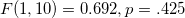）。 なお、降圧剤の効果および交互作用も有意でない。
> data04 <- data.frame(被験者=factor(rep(data03[,1],2)), # ※factor()を忘れないこと
+ 降圧剤=rep(data03[,2],2),
+ 対比=factor(c(rep(1,12),rep(2,12))),
+ 血圧変化=rbind(as.matrix(data03[,3]),
+ as.matrix(data03[,4])))
> head(data04,5)
被験者 降圧剤 対比 血圧変化
1 1 10mg 1 6
2 2 10mg 1 -5
3 3 10mg 1 -3
4 4 10mg 1 3
5 5 10mg 1 6
> fit05 <- aov(血圧変化~降圧剤*対比+Error(被験者/対比), data=data04)
> summary(fit05)
Error: 被験者
Df Sum Sq Mean Sq F value Pr(>F)
降圧剤 1 2.7 2.67 0.055 0.819
Residuals 10 485.3 48.53
Error: 被験者:対比
Df Sum Sq Mean Sq F value Pr(>F)
対比 1 48.2 48.2 0.692 0.4250
降圧剤:対比 1 337.5 337.5 4.847 0.0523 .
Residuals 10 696.3 69.6
---
Signif. codes: 0 ‘***’ 0.001 ‘**’ 0.01 ‘*’ 0.05 ‘.’ 0.1 ‘ ’ 1
以下、「SASによる実験データの解析」第12章（p.248-）による。
ある群での経時観測値 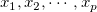 の分散共分散行列が 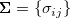 であるとする。 このとき、正規性と分散共分散行列の等質性に加え、
| 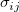 | 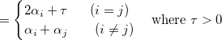 | (3.22) | ||
 |
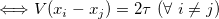 | (3.25) |
でないといけない（Huynh & Feldt, 1970; H-F条件）。
これは、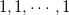に直交する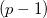本の正規直交対比 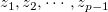 について、その分散共分散行列が 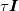 であることとも同等である。 これを、正規直交対比の分布に関する球面性の仮定という。
正規直交対比のプールされた平方和積和行列を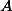とすると、
| 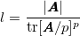 | (3.26) |
をMauchlyの基準といい（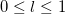）、の自由度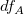が大きければ、H-F条件の下で
| 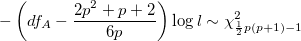 | (3.27) |
となることが知られている。
球面性の仮定が満たされていないと、 値は実際よりも小さくなることが知られている。
値は実際よりも小さくなることが知られている。
Greenhouse & Geiser (1959) により、母集団標準偏差の関数
| 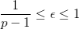 | (3.28) |
を用いて5、時間の主効果もしくは時間と被験者間要因との交互作用について
| 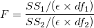 | (3.29) |
を自由度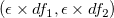の 分布で近似できることが示された。
分布で近似できることが示された。
このについて、定義式中のを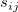で置き換えたものを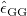とすると、Huynh & Feldt (1976) によりバイアスを修正した
| 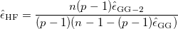 | (3.30) |
が提案され、
| 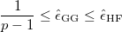 | (3.31) |
であることが知られている。
球面性の仮定が棄却されたり、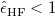となるようなケースでは、自由度修正を行うことが推奨される。
Footnotes
| 多変量分散分析（SASによる実験データの解析：第14章） |